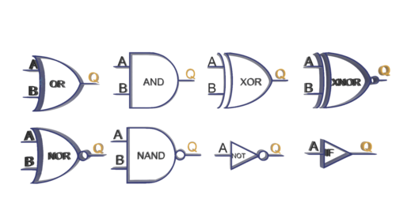

El álgebra booleana es un sistema matemático deductivo centrado en los valores cero y uno (falso y verdadero). Un operador binario " º " definido en éste juego de valores acepta un par de entradas y produce un solo valor booleano, por ejemplo, el operador booleano AND acepta dos entradas booleanas y produce una sola salida booleana.
Para cualquier sistema algebraico existen una serie de postulados iniciales, de aquí se pueden deducir reglas adicionales, teoremas y otras propiedades del sistema, el álgebra booleana a menudo emplea los siguientes postulados:
- Cerrado. El sistema booleano se considera cerrado con respecto a un operador binario si para cada par de valores booleanos se produce un solo resultado booleano.
- Conmutativo.Se dice que un operador binario " º " es conmutativo si A º B = B º A para todos los posibles valores de A y B.
- Distributivo. Dos operadores binarios " º " y " % " son distributivos si A º (B % C) = (A º B) % (A º C) para todos los valores booleanos A, B, y C.
- Identidad. Un valor booleano I se dice que es un elemento de identidad con respecto a un operador binario " º " si A º I = A.
- Inverso. Un valor booleano I es un elemento inverso con respecto a un operador booleano " º " si A º I = B, y B es diferente de A, es decir, B es el valor opuesto de A.
Para nuestros propYoacutesitos basaremos el álgebra booleana en el siguiente juego de operadores y valores:
- Los dos posibles valores en el sistema booleano son cero y uno, a menudo llamaremos a éstos valores respectivamente como falso y verdadero.
.- El símbolo · representa la operación lógica AND. Cuando se utilicen nombres de variables de una sola letra se eliminará el símbolo ·, por lo tanto AB representa la operación lógica AND entre las variables A y B, a esto también le llamamos el producto entre A y B.
- El símbolo "+" representa la operación lógica OR, decimos que A+B es la operación lógica OR entre A y B, también llamada la suma de A y B.
- El complemento lógico, negación ó NOT es un operador unitario, en éste texto utilizaremos el símbolo " ' " para denotar la negación lógica, por ejemplo, A' denota la operación lógica NOT de A.
- Si varios operadores diferentes aparecen en una sola expresión booleana, el resultado de la expresión depende de la procedencia de los operadores, la cual es de mayor a menor, paréntesis, operador lógico NOT, operador lógico AND y operador lógico OR. Tanto el operador lógico AND como el OR son asociativos por la izquierda. Si dos operadores con la misma procedencia están adyacentes, entonces se evalúan de izquierda a derecha. El operador lógico NOT es asociativo por la derecha.
La lógica booleana solo permite dos estados del circuito, como True y False. Estos dos estados están representados por 1 y 0, donde 1 representa el estado "Verdadero" y 0 representa el estado "Falso".
Lo más importante para recordar en el álgebra de Boole es que es muy diferente al álgebra matemática regular y sus métodos. Antes de aprender sobre el álgebra de Boole, vamos a contar un poco sobre la historia del álgebra de Boole y su invención y desarrollo.
Al formular expresiones matemáticas para circuitos lógicos es importante tener conocimiento del álgebra booleana, que define las reglas para expresar y simplificar enunciados lógicos binarios. Una barra sobre un símbolo indica la operación booleana NOT, que corresponde a la inversión de una señal.

Video sobre el álgebra Booleana